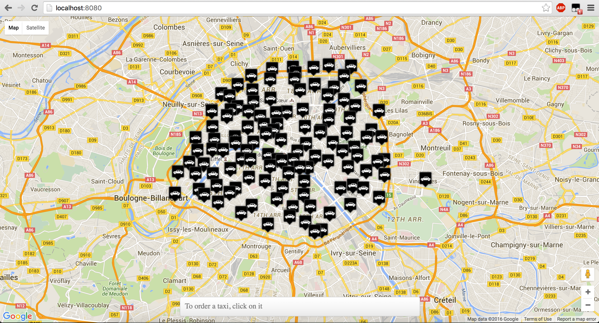
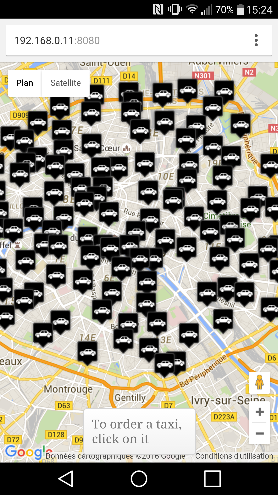
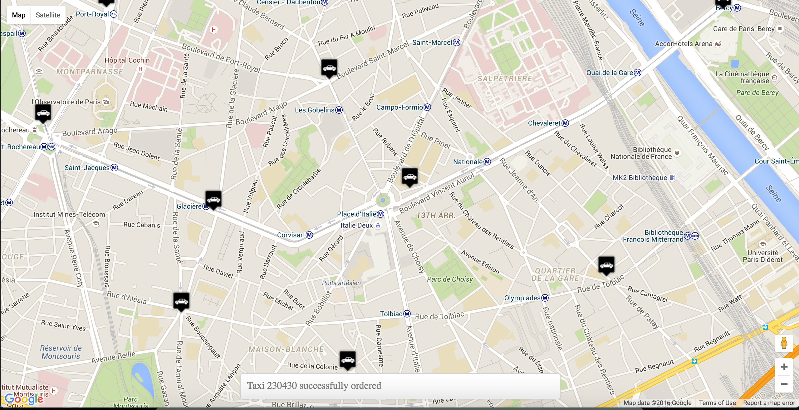
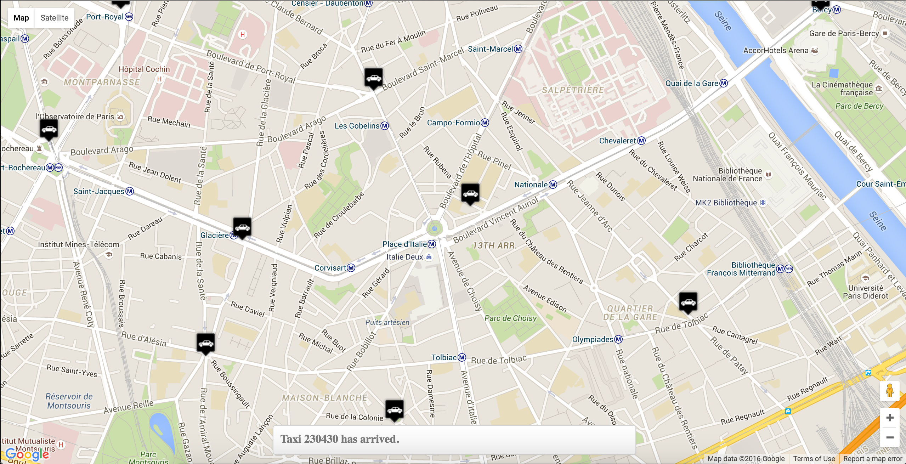
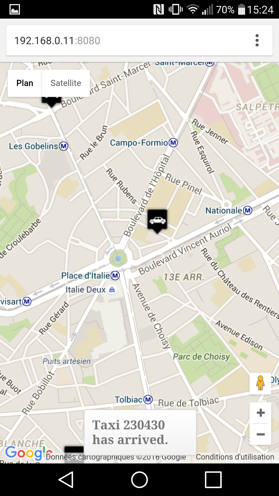

Le projet Taxi4Paris
Description succinte du projet
Le but du projet est de réaliser un système de réservation de taxis sommaire, en utilisant les technologies suivantes :
- HTML5
- CSS
- jQuery
- Node.js (notamment socket.io)
- Javascript
De plus, le projet doit être utilisable sur Smartphone (donc le site doit être responsive).
Réalisé par Valentin et Jean-Baptiste pour la mineure Application Web.
Installation ?
Pour avoir des détails sur l'installation, merci de lire le fichier README.MD qui contient toutes les commandes utiles
à la mise en production de Taxi4Paris
Description imagée
- Page d'accueil : sélection d'un taxi (= commande d'un taxi) en cliquant sur les taxis disponibles sur la carte


- Ensuite, le taxi se déplace sur la carte et arrive à destination



Liste des fichiers
- index.html : Page html centrale
- package.json : contient les packages nodejs utilisé, géré par "npm install"
- start.sh : script permettant de tout télécharger (jquery etc) et aussi taxis.json cf readme.md
- style.css : style css
- main.js : toutes les fonctions js cote client
- node/socketserver.js : fonctions js cote serveur
- node/taxis.json : fichier json des données taxis de localisation
{kind=link}
{kind=link}
{kind=link}
{kind=link}
{kind=link}